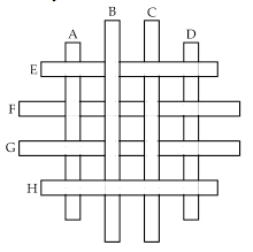
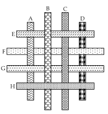

TAHTA BLOKLAR
Sekiz tahta bloğu en altta olandan en üstte olana doğru sıralayabilir misiniz?

Cevap:
Doğru sıralama alttaki renklendirilmiş resimde daha kolay görüleceği üzere; D-F-A-G-C-E-B-H biçimindedir.
